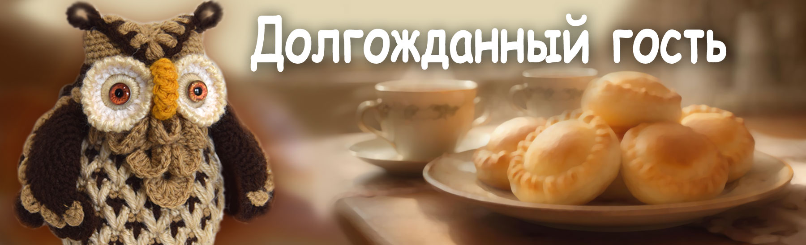

Сказки кота Филомура
бережно записанные его давним поклонником — крысом Мышелем

Долгожданный гость
День тихо ускользал, прячась за холмом. Солнце опускалось в пруд, оставляя на воде длинные золотые полосы, и только старый дуб у ручья не спешил засыпать.
В его широком дупле жила София — мудрая сова, хранительница лесных тайн. Она перебирала клубочки пряжи, когда вдруг почувствовала лёгкое движение воздуха.
На ветку возле дупла бесшумно сел совёнок. Он немного замешкался: ему было неловко. Он узнал, что у него есть ещё одна бабушка, и ему стало интересно. Вот он и прилетел. Но объяснить свой визит он совершенно не знал как.
София выглянула наружу.
— Приветик! Вот ты и прилетел. Что же ты тут сидишь? Заходи.
Совёнок вздрогнул:
— Ты… знала, что я прилечу?
— Конечно знала, — улыбнулась София и ласково открыла крылом вход в дупло.
Митёк — так звали совёнка — осторожно шагнул внутрь.
Тепло. Уют. Запах трав, печёной капусты и мягкой пряжи. На столе стояла тарелка с румяными пирожками.
— Садись, угощайся.
— Пирожки с капустой?! Мои любимые!
— И мои, — мягко ответила София.
Совёнок взял пирожок, надкусил и зажмурился от удовольствия:
— Такие вкусные! А ты их что… каждый день печёшь?
— Нет, только когда жду особенного гостя.
Митёк снова поднял глаза:
— Ты меня ждала?
<
— Да.
— Давно?
— Всегда.
Он удивлённо моргнул:
— Но… откуда ты знала?
София наклонила голову:
— Мне сказали духи леса.
Совёнок замер:
— Духи леса?.. А что они тебе ещё сказали?
— Что завтра будет дождливый день. А на следующей неделе — тепло и солнечно.
Митёк понизил голос:
— Правда… Ты их тоже видела?
— Да, видела.
Совёнок глубоко вдохнул:
— А мне всегда говорили, что духов нет. Что это всё фантазии. И лучше об этом не говорить… иначе подумают, что я… ну… не такой.
София погладила его по голове концом крыла:
— Подумают. Но только те, чей мир очень маленький.
Она мягко поставила перед ним большую корзинку с клубочками, крючками и маленькими вязаными игрушками:
— Хочешь поиграть?
— Ой! Какие красивые! А что ты с ними делаешь?
— Когда игрушка готова, я дарю ей душу — и она уходит жить в сказку.
— Я тоже умею вязать… Но мне говорили, что это не для мальчиков.
— Я знаю, — кивнула София.
Она достала маленького зелёного зайчика:
— Вот этот мне как-то рассказал об этом. Узнаёшь?
Совёнок ахнул:
— Это же я связал его… очень-очень давно.
София взяла клубочек рыжей пряжи:
— Смотри. Когда-то в этой нитке жила маленькая личинка моли. Она могла ползать только туда и обратно — вдоль одной ниточки. Для неё весь мир — узкий коридор. Одномерный.
Она показала на чулан:
— А там живёт мышонок. Он никогда не выходил наружу. Для него мир — плоский, как страница. Двумерный.
София раскрыла крылья:
— А мы, птицы, умеем летать. Видим лес, пруд, поляну, закат. Мир трёх измерений.
Совёнок слушал, не перебивая. София тихо продолжила:
— Если рассказать мышонку о полёте и о том, как выглядит дуб сверху, он не поверит. Скажет, что это фантазии. Его мир слишком мал для неба.
Митёк шевельнул крылом:
— Значит… они просто не могут видеть то, что вижу я?
— Да, мой хороший. И это не делает тебя неправильным. Просто есть миры многомерные. И туда входят немногие — те, кто приходят в этот лес чуть раньше, чем мир успевает их понять. Такие, как ты.
Совёнок долго молчал. Потом спросил почти шёпотом:
— Значит… духи леса есть? Просто их видят не все? И те, кто видят… совсем не…
— Совершенно верно, — улыбнулась София и приложила пальчик к клюву.
— Шшш… Это тайна.
Митёк осторожно взял ещё один пирожок:
— Тогда… я рад, что прилетел.
София тихо улыбнулась:
— Я тоже. И мне жаль, что раньше я не могла быть рядом.
И в этот момент между ними установилась тишина — та самая глубокая, настоящая, в которой слова не нужны.
И София тихо подумала:
«Тот, кто знает свой корень, всегда найдёт дорогу к себе.»

🌟 Вопросы и задания для юного читателя
1. О чём эта глава? Перескажи историю в 3–5 предложениях.
2. Кто главный герой этой главы? Опиши его: внешность, характер и настроение.
3. Если бы ты мог задать главному герою один вопрос, каким бы он был? Запиши его — и попробуй ответить на него от имени героя.
4. Какой выбор сделал кто-то в этой главе? Согласен ли ты с ним? Что бы ты сделал иначе?
5. Найди в главе 5–10 новых слов. Запиши их, узнай их значение и составь по одному предложению с каждым словом.
6. Выбери свою любимую фразу или момент. Почему он тебе запомнился?
7. Придумай короткую дополнительную сцену, которая могла бы произойти дальше. Напиши 3–6 реплик диалога.
8. Придумай новое название для этой главы. Объясни, почему ты его выбрал.
9. Какие чувства вызвала у тебя эта глава? Выбери три слова (например: любопытство, тревога, радость, удивление) и объясни свой выбор.
10. Выбери сцену, которая запомнилась тебе больше всего. Нарисуй её и добавь маленькие детали, которые считаешь важными.